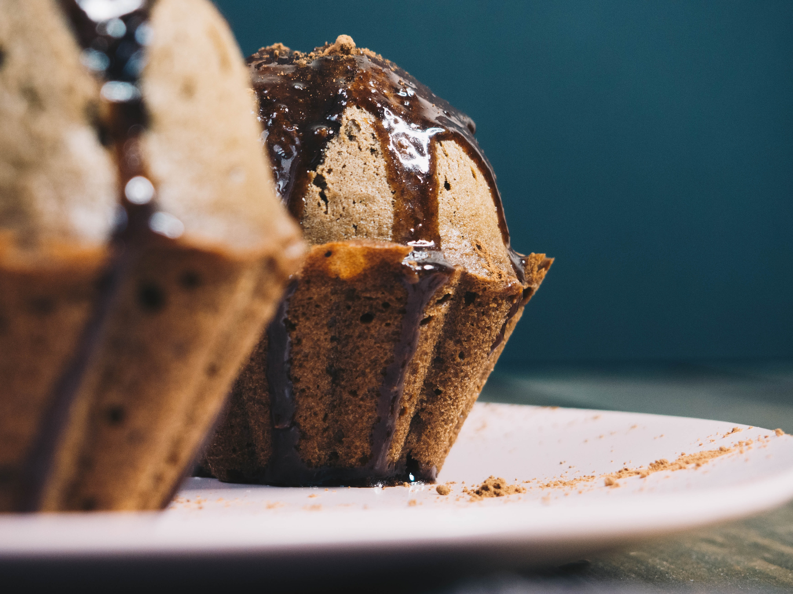

IRISH SODA BREAD MUFFINS

DESCRIPTION:
For a golden top, brush muffins with more melted butter and top with demerara sugar before baking.
INGREDIENTS:
- 3 cups all-purpose flour
- 1 cup raisins
- ½ cup white sugar
- 2 tablespoons white sugar
- 1 tablespoon caraway seeds
- 1 tablespoon baking powder
- 1 teaspoon salt
- ¼ teaspoon baking soda
- 1 ¾ cups buttermilk
- 1 egg
- ¼ cup butter, melted
STEPS
- Step 1
Preheat oven to 400 degrees F (200 degrees C). Line a muffin tin with paper liners.
- Step 2
Mix flour, raisins, 1/2 cup plus 2 tablespoons sugar, caraway seeds, baking powder, salt, and baking soda in
a large bowl.
- Step 3
Whisk buttermilk and egg together in a small bowl. Stir into flour mixture. Fold butter into the batter.
- Step 4
Spoon batter into the prepared muffin tin.
- Step 5
Bake in the preheated oven until a toothpick inserted into the center comes out clean, 20 to 30 minutes.
Move to Top.
Go Back to Home page